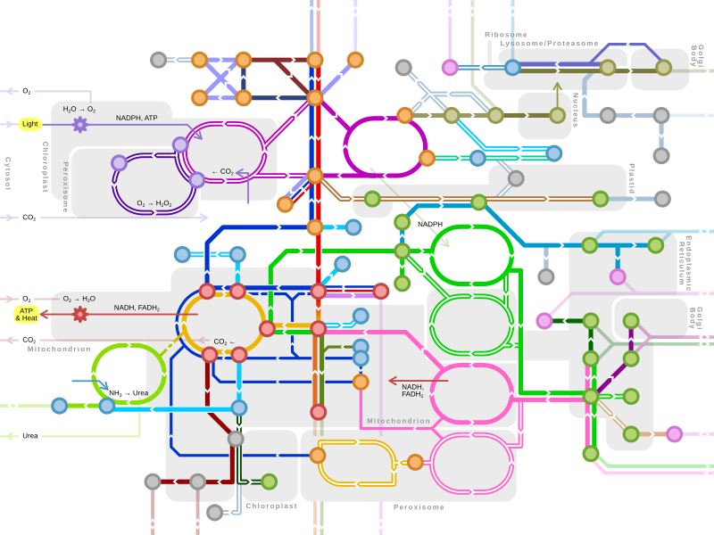

După rolul jucat în biologia organismelor, metabolismul este clasificat în:
- Metabolism primar sau fundamental, care este implicat direct, esenţial în menţinerea vieţii organismelor şi plantelor.
- Metabolism secundar sau lăturalnic, care este implicat în producerea de substanţe "neesenţiale" vieţii (de ex., pigmenţi, alcaloizi, antibiotici agenţi etc.).
Energia necesară proceselor de biosinteză provine în cea mai mare parte din desfacerea legăturilor macroergice ale diferiţilor compuşi. În funcţie de capacitatea de producere a energiei, organismele se împart în:

Reglarea metabolismului
Mecanismele de reglare a metabolismului pot fi împărţite, după nivelul la care acţionează, în: mecanisme celulare, umorale şi nervoase. Reglarea celulară realizează integrarea reacţiilor metabolice într-un tot unitar .Reglarea nervoasă şi umorală integrează procesele metabolice celulare în funcţie de necesităţile întregului organism şi le adaptează la condiţiile de mediu. Reglarea activităţii metabolice celulare se realizează prin controlul activităţii enzimatice, prin două mecanisme principale:
a) modificarea cantităţii de enzime prin controlul sintezei acestora, proces ce asigură adaptarea de lungă durată şi lentă a proceselor metabolice;
b) modificarea eficienţei catalitice a enzimelor prin mecanisme inhibitorii de tip feed- back, ce asigură adaptarea rapidă, de scurtă durată a proceselor.
- Reglarea umorală se realizează prin hormonii glandelor endocrine şi prin hormonii locali .Sistemul nervos influenţează metabolismul în primul rând prin intermediul sistemului endocrin, sistemul hipotalamohipofizar asigurând controlul principalelor glande endocrine, fiind greu de disociat reglarea nervoasă de cea umorală
- Reglarea nervoasă directă a proceselor metabolice o realizează sistemul nervos vegetativ simpatic prin intermediul adrenalinei